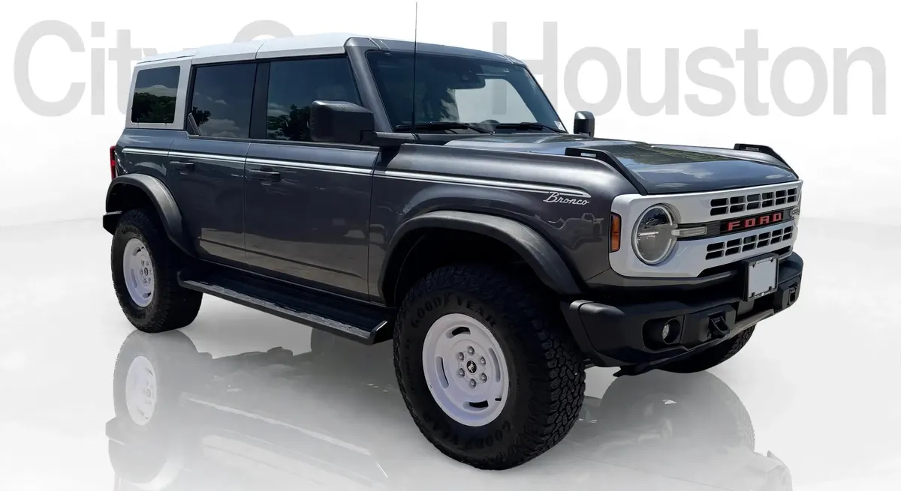

2025 Ford Bronco Heritage
Black • ID CCH-510

1/5General
| Year | 2025 |
|---|---|
| Make | Ford |
| Model | Bronco Heritage |
| Type | SUV |
| Color | Black |
| Mileage | 2,000 miles |
| Drivetrain | To be confirmed |
Model specifications
| Engine | 2.3L EcoBoost I4 (standard; option: 2.7L EcoBoost V6) |
|---|---|
| Horsepower | 300 (2.3L); 330 (2.7L V6) |
| Torque | 325 lb-ft (2.3L); 415 lb-ft (2.7L V6) |
| Transmission | manual 7-speed (standard); 10-speed automatic (optional) |
| Model drivetrain | 4x4 |
| Fuel economy (MPG) | City: 17. Highway: 18-19 |
| Fuel | Gasoline |
| Max towing | 3,500 lb |
| Seats | varies depending on unit (4-5 depending on 2 or 4 puertas) |
| Body style | SUV |
Typical figures for this year and model, taken from public sources (manufacturer, KBB, Edmunds). The dealer confirms the exact engine, drivetrain and equipment of this unit.
Great for
For families and anyone who needs room for passengers and luggage.
Year, mileage and features come from the inventory data; confirm this unit's exact details with the dealer. This sheet shows no prices: the dealer provides them in writing.